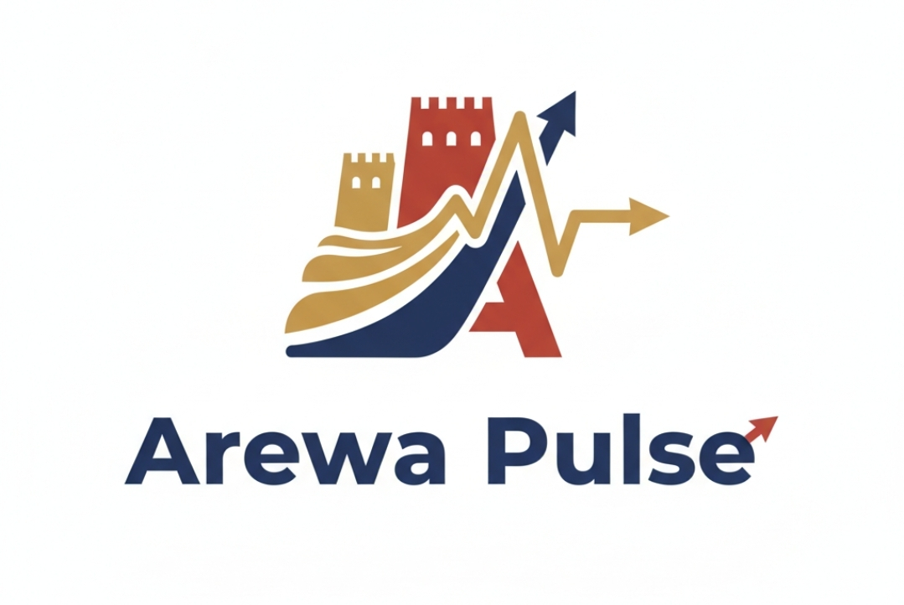
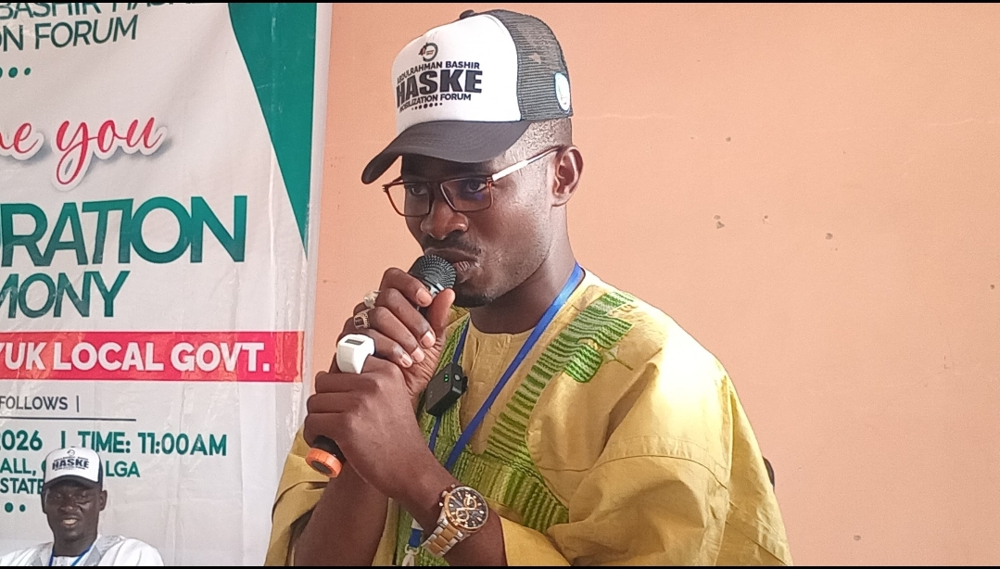
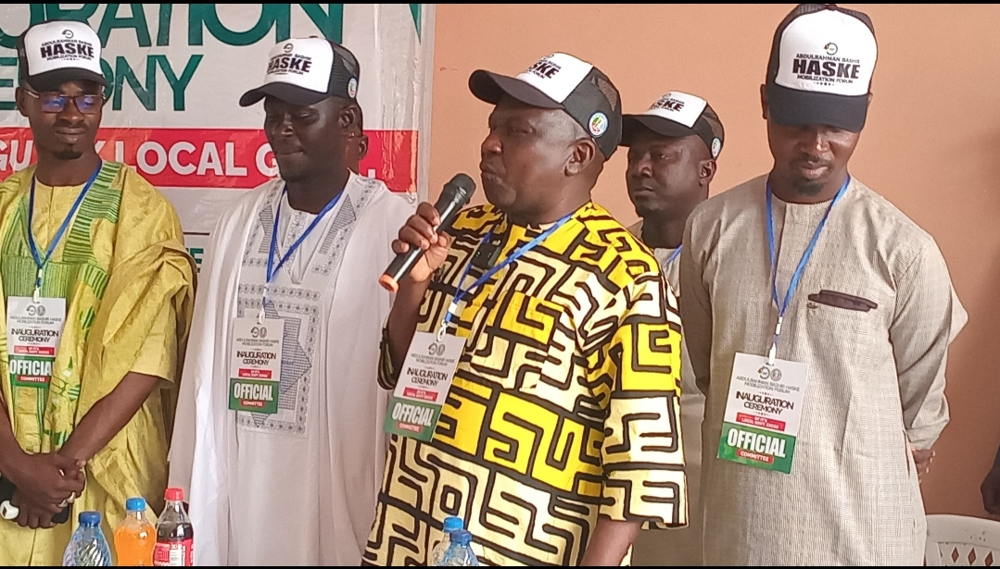
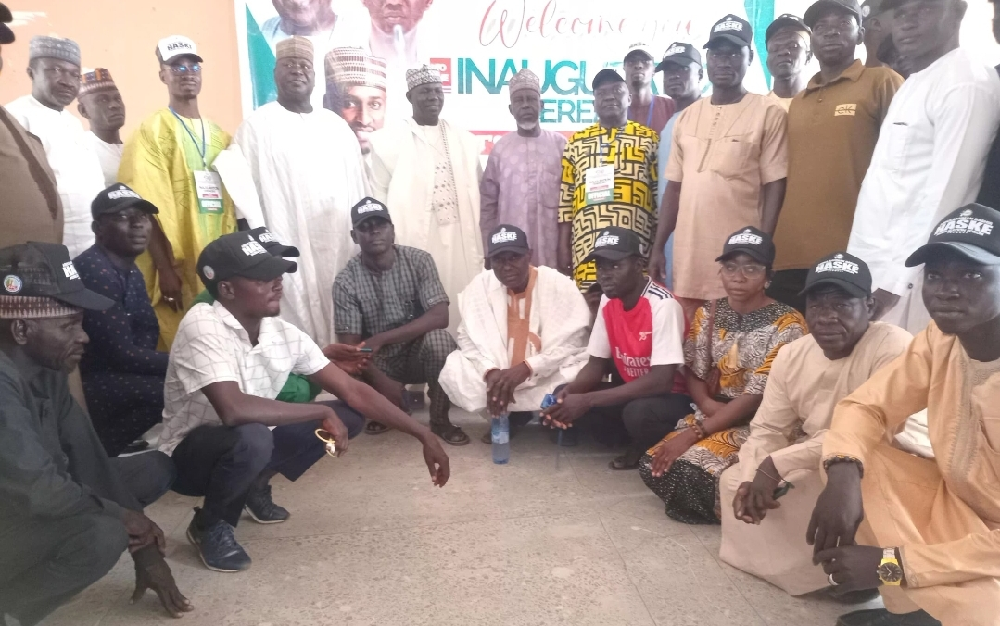

The Alhaji Abdulrahman Basheer Haske (AB Haske) Mobilisation Forum in Adamawa State has inaugurated its Guyuk Local Government Area coordinators and executive members, in a move aimed at strengthening grassroots mobilisation ahead of the 2027 governorship race.
The inauguration ceremony, which attracted party stakeholders, community leaders, and supporters, marked a major step in expanding the forum’s organisational structure across the state. It underscored the forum’s commitment to building a solid grassroots network in support of Alhaji Abdulrahman Basheer Haske, an APC governorship aspirant in Adamawa State.
Representing His Excellency Alhaji Abdulrahman Basheer Haske at the event was Mr. Charles Su'uwukumfakeni Bansi, Chairman of the AB Haske Foundation National, who conveyed the aspirant’s appreciation to party faithful and supporters in Guyuk LGA for their loyalty and dedication. He emphasized that the mobilisation forum is focused on promoting inclusive leadership, people-oriented governance, and sustainable development across Adamawa State.

The inauguration was formally conducted by Zakiru Abubakar Barade, State Coordinator of the AB Haske Mobilisation Forum, Adamawa State. In his address, Barade described the event as a strategic milestone, noting that the newly inaugurated executives would play a crucial role in mobilising support, sensitising communities, and strengthening the APC’s presence at the ward and polling-unit levels.
Other notable dignitaries present at the event included Hon. Yarima Dende, Organising Secretary of the AB Haske Foundation; Hon. Yakubu Baneje, Chairman of the Mas’ud Ibrahim Solidarity Movement; Hon. Aliyu Chokalin; Hon. Mas’ud Sani Tirgeli, Director of Media at the AB Haske Mobilisation Forum, among other party leaders and supporters.
Speakers at the event urged the newly inaugurated officials to work with unity, discipline, and commitment in order to advance the vision of Alhaji Abdulrahman Basheer Haske, which they described as centered on good governance, economic empowerment, youth development, and improved infrastructure.
The successful inauguration in Guyuk LGA further demonstrates the AB Haske Mobilisation Forum’s resolve to consolidate grassroots support and build momentum for Alhaji Abdulrahman Basheer Haske’s anticipated bid for the Adamawa State governorship in 2027.

I will like to recommend the effort of our state organizing secretery ABH2027 Mobilization Forum Abdurrahman Garba for the good job he did when flag-off of the innaugration of the newly local goverment executive of the forum, that commences from the southern zone which kick started from Guyuk Local Goverment, which is very impressive the way and manner the program was organized, he use a simple language to address the entire public which make the program very intresting between the members of the hight table and the invited guest and also the guest speakers perform a wonderfull speach which make the program very exciting to the extend that things was done well.